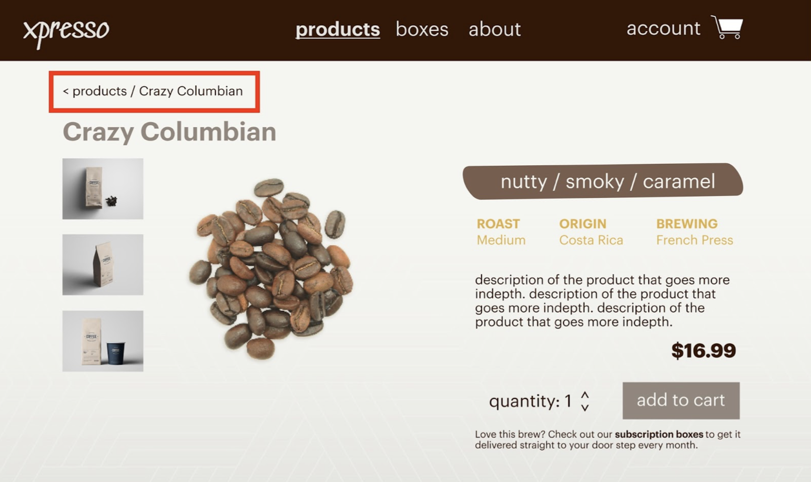
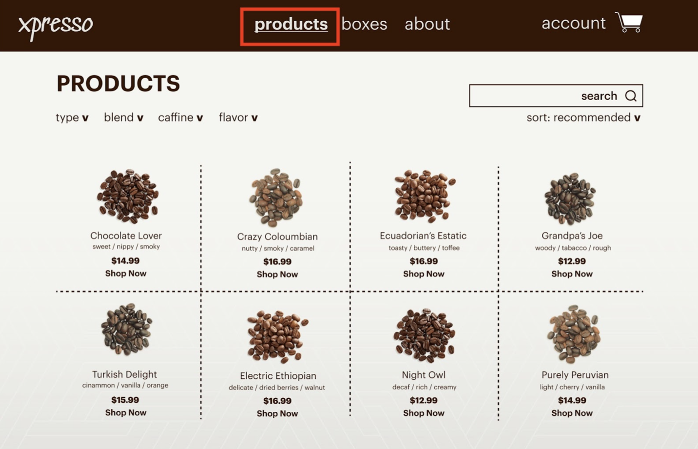
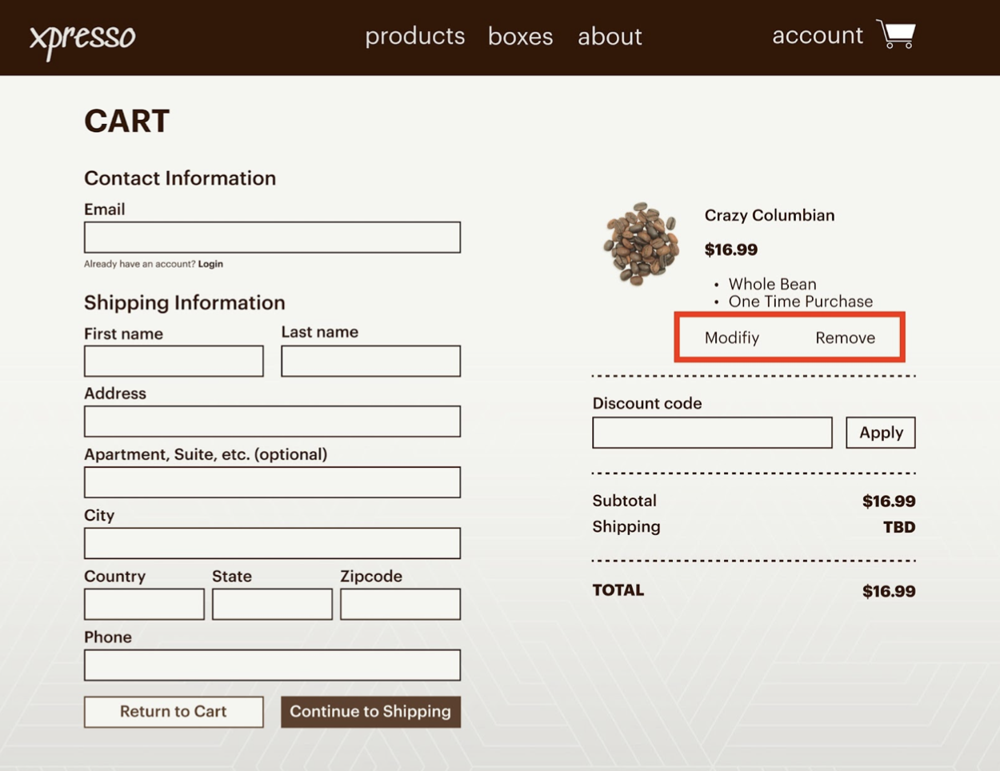

Coffee, straight to your doorstep
For my Programmable User Interfaces course, we were tasked with designing and building a website for a fabricated subscription service using HTML, CSS, and Javascript.
I chose a coffee subscription company called, Xpresso. Since this project was apart of a course, I was unable to fully follow a formal design process.
ROLES
Design
Wireframing
Prototyping
Testing
Web Development
CLIENT
Concept Project
TIME
March 2022
01
Parallel Prototyping
To kick off the design process, I created 3 different iterations of lo-fi wireframes of the home page, products page, and individual product page.
I ran my first round of user testing to find the strongest aspects of each of my individual wireframes, in order to combine them into my final wireframe. After reiceving user feedback my strongest elements were:
| Image and Call to Action |
|---|
| Home Page |
| Many of my target users agreed that the best home page was from the first iteration because the image captured their attention and then their eyes were drawn to the box of text where there was a call to action of 'Shop'. |
| Multi-Column View |
|---|
| Products Page |
| All of my user testers felt the strongest product page was from my second iteration because it provided a high level overview of all of my company's products. This allowed users to browse multiple products at once and see the variety offered without having to scroll or switch pages. |
| Graphics and Details |
|---|
| Individual Product page |
| The majority of my testers agreed that their favorite individual product page came from the third iteration because of the graphics/icons to describe the coffee flavor profile. Many mentioned it was engaging and allowed them ot understand the product better. |
02
Hi-fi Prototype
After I finalized my lo-fi wireframe I moved onto designing my hi-fi prototype. My biggest design decisions came in the form of font and color choice. For my font, I wanted to select a fun font for the Brand name and some accents, but an easy to read san-serif font for the bulk of the text. Along the same lines I wanted my color palette to reflect my product, so I gravitated to earthy tones and muted colors. My design guide is as follows:
Title
SUBHEADING
Body
| #361706 | #7A5D4D | #94877E | #E1AF48 | #E6E5E0 |
|---|
03
Heuristic Evaluation
Before coding my website, I ran a usability test, heuristic evaluation to ensure that my website had an easy to understand, intuitive UI. During my heuristic evaluation I ran into 3 errors which I corrected.
|
VISIBILITY OF SYSTEM STATUS
When users were on individual product pages they did not have a clear way of going back to the overall product page. |
|
|  |
Solution: Breadcrumb that allows users to easily see where on the website they are, as well as provide easy way to backtrack to the overall product page |
|
VISIBILITY OF SYSTEM STATUS
When users were on individual product pages they did not have a clear way of going back to the overall product page |
|
|  |
Solution: Change font weight and text decoration to indicate to user which page they are currently viewing, providing feedback |
|
USER CONTROL AND FREEDOM
When checking out the user previously did not have a way to modify their selection either in quantity or to remove a selection |
|
|  |
Solution: Added modify and remove buttons on the checkout page to allow for users to change or remove their selections before making a purchase |
04
Building the Website
When coding my website using HTML, CSS, and Javascript, I ran into a couple issues with storing user data that would load on the cart page. I overcame this problem by using localStorage but since my information was stored in objects I had to remember to convert my object to a string in order to store it correctly. Keep scrolling to see my final implementation!
05
Final Website

06
Conclusion
This was my first website that I created by myself, from design to implementation. The entire process was an extremely rewarding; working through both design and programming bugs, in order to create a website that was high functioning.
This project also taught me that I enjoy the entire process of web development and that I hope to learn more web development framworks in the future to become a better developer, as well as designer.